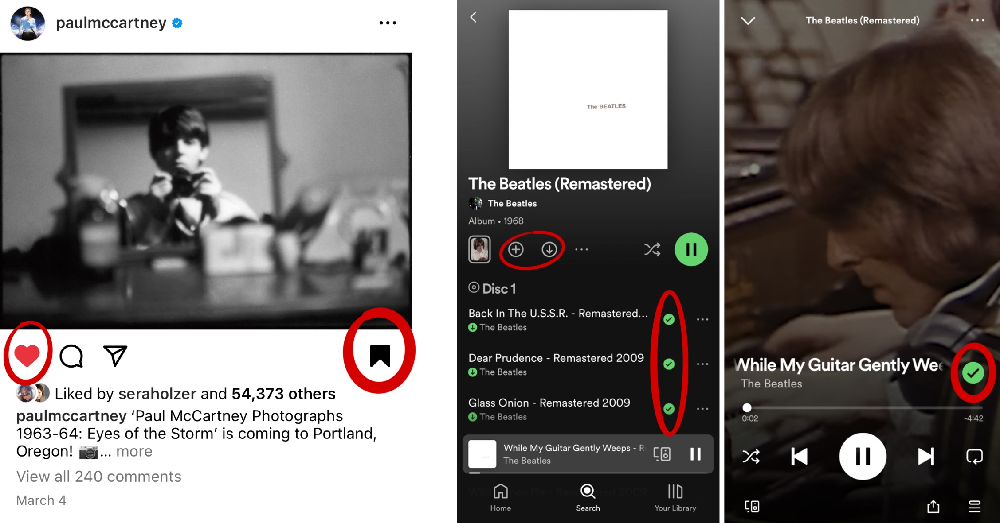
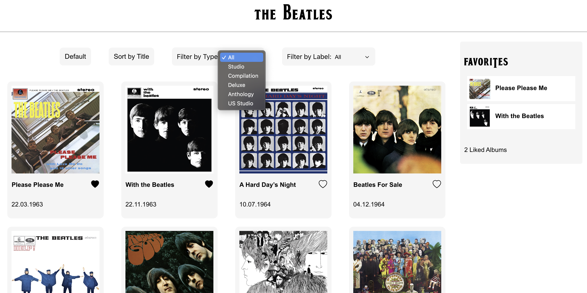

Beatles Album Aggregator
Introduction
Whenever faced with a large assortment of items I love being able to highlight my favorites! For this project I've built an favoriting site, informed by a competitive analysis, that allows the user to create a list of their favorite Beatles from the larger discography. Additionally, the user can filter, order, or reset the full discography collection.
Competitive Analysis
In preperation for designing and building my aggregator I completed a competitive analysis of three other plaforms to research the design of filtering, sorting, and favoriting features. I condensed this into a competitive comparison chart to best layout these comparisons.
| Goodreads | Spotify | ||
|---|---|---|---|
| General Favorites List | Yes - good reads has a general read list for saved books | Yes - instagram has a general save button | Yes - there is a general liked songs list |
| Specific/Customizable Lists | Yes - you can create and name your own lists, although this is not the most intuitive | Yes - you can make specific saved lists, but this isn’t the most intuitive | Yes - making playlists is a large part of the platform and you can name and customize them |
| Rating | Yes - you can rate books and write reviews | No - although you can comment | No - no, although you can see artists most played songs |
| Toggle Public/Private Lists or favorites | No toggle - All lists are public | No toggle - Saved content is all private | Yes- you can toggle and customize which playlists and saved things are public or private (for the most part) |
| Image in saved List | Yes - book cover is visible | Yes - top post image visible | Sometimes - some views give you a little album cover image, others don’t |
| Ordered saved favorites or saved list | Depends - you can sort lists based on different categories, but you can’t create a custom order | No - automatically ordered by post date | Yes - you can customize the order or shuffle, but you can’t sort playlists based on different factors | Show if an item is saved (to a list) | Generally - you easily see if a book is in your read list but it is less clear if it is in one of your customizable lists | Generally - you can see if you have saved a post, but not superficially see if a post is in a particular folder | Sometimes - you can see if you have a song in favorites or downloaded, but not if it’s in a specific playlist |
| Remove Item from List | Yes - click on the item to get options and choose to remove it | Yes - hit the save icon again to unsave it/toggle that feature off | Yes - either edit the playlist or change the icon itself |
Summary
Across these different interfaces there are a lot of similar functions that manifest very differently in the actual application. Having the option to save items to different lists is very important to all these platforms, however this feature is implemented differently depending on the situation. Goodreads allows you to create different “bookshelves” as lists for organizing saved books, although it defaults to a “Read” list and “To Read” one. Spotify’s playlists feel like a very different concept, although it achieves the same function of creating customizable lists. Like Goodreads, Spotify also creates a default list of “Liked Songs”. Uniquely, Spotify also generates playlists for you based on your preferences and activity. Instagram allows you to save posts to folders or to a general saved post section. Spotify and instagram handles adding items to customized lists with the most ease, while Goodreads has a less intuitive design requiring more prior knowledge in order to make and add books to your own lists, making it less learnable and having lower memorability. Overall, this consistency emphasizes the importance of having both default and customizable lists in an aggregator.
For reference, here are the Instagram and Spotify favoriting features that I will be drawing reference from
Features I Plan to Implement
- I think that having an image or icon next to the saved item is really helpful in distinguishing the items in the saved list and so I hope to include that. When an album is favorited on my list I intend to include the album cover as well as just the title for easier visualization of the saved list.
- I like Instagram’s save feature design and, since my site is so simple and all on one page, I plan to make my items removable from the list by toggling the heart icon on and off. This avoids the clutter or complication of having a remove button for each item in my saved list and also makes it clear when an item is in my list or not. Since you can only add each item once this allows for an easy visual and avoids attempts at adding the same thing multiple times.
Implementation
I love the Beatles and wanted to create a site that would allow you to group your favorite, sort, and filter the albums. I condensed the filters into two dropdown menus allowing you to filter by album type (studio, compilation, anthology, etc.) or production label (Apple or Parlophone). Since these filters can work in tandem it is interesting seeing the overlap between the producers and the types of albums that were made. If I were to build this out more I could generalize the features and expand it to work for more albums and artists, however, for the scope of the project I chose to commit to the Beatles theme!
Clicking on the drop down allows the user to choose filtering categories, while clicking on the buttons allows the user to sort or reset to the default organization.

I also was inspired by Instagram and Spotify’s favoriting features that allow you to “like” or “save” a post or song by clicking the icon. I also liked the ease of removal that unclicking allows, rather than having a different remove button within the favorites list. This also provides clear visual cues of what items are in the favorites list and which aren’t.
I opted for a cleaner, flat design that is aimed towards users who have familiarity with most popular sites. This meant I relied on visual cues such as the heart, rather than labeled buttons for "add to favorites" or "remove from favorites". Similarly, I used a subtle off white color to differentiate common regions, rather than a higher contrast color. While this still passes accessability assessments, it assumes some familiarity with modern website designs.